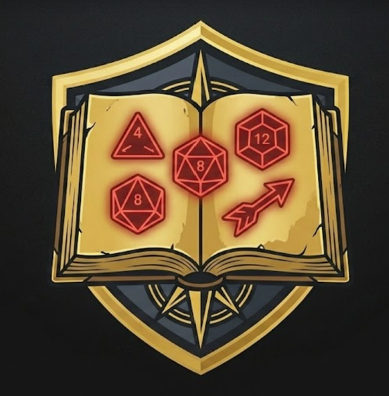
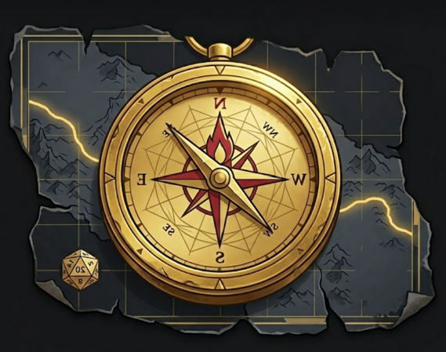
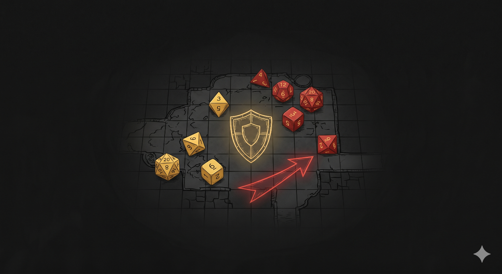

Join the Tacticians
Join the Tacticians
Master the Frontline. Simplify the Rules.
Have you ever spent hours scrolling through dense wikis just to figure out a feat combo, or trying to understand if your background fits your build? Traditional resources are overwhelming. Welcome to The Tabletop Tactician, where we optimize frontline character creation through modern, highly visual, and scannable design. We cut through the visual noise so you can theory craft faster.

Races
Choose your Race.

Classes
Choose your Class.

Feats
Choose your Feats.

Library
Backgrounds & Creatures.

We Optimize.
You Play.
We are a very small team of veteran min-maxers, dungeon masters, and developers who got tired of fighting clunky user interfaces to answer basic rules questions. The Tabletop Tactician was built to bridge the gap between academic rule analysis and visually efficient design. We don't just provide raw data; we curate and present the optimal paths forward for frontline characters, ensuring your build is battle-ready in half the time.